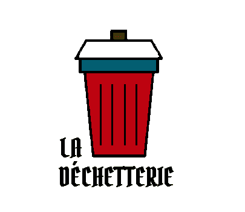
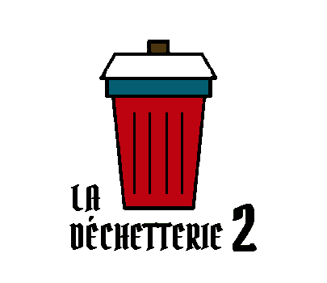
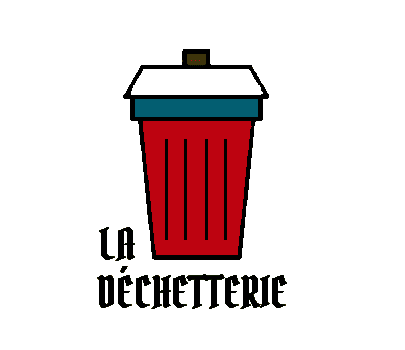
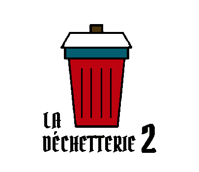

Les Insurgés
des déchets


Les Insurgés
des déchets


Prochaines actions
Bourcefranc* dans :
*Événement réservé aux adhérents
:
:
WCUD dans :
:
:
Prochaine(s) action(s)
Nom opération : Ramassage + Concours amical de pétanque
Objectif : Ramasser en ville et s'amuser
Lieu rdv : Boulodrome Roland Tétaud, 17560 Bourcefranc-Le Chapus
Date : 08/06/2025
Heure : 14h00
14h00 Ramassage express de déchets en ville par doublette :
- Des points de bonus à gagner pour le concours de pétanque, merci d'amener vos gants.
14h30 Concours amical de pétanque en doublette :
- 1 adhérent de l’association au minimum par équipe
- Gratuit pour les adhérents
- 5€ pour les non adhérents
- Amenez vos boules !
- Inscription obligatoire par mail lesinsurgesdesdechets@gmail.com
ou sms au 06 98 35 06 42.
Récompenses à gagner, restauration et buvette sur place,
venez partager un bel après-midi avec nous !
Nom opération : WCUD 2025
Objectif : Nettoyer la plage, la ville et la forêt
Lieu rdv : 46 Avenue de la Chaumière, 17390 La Tremblade
Date : 20/09/2025
Heure : 10h00
10h00 : Pot d'accueil au Casino Partouche La Tremblade / Ronce les bains. Briefing sur les consignes de sécurité, les techniques de ramassage raisonné, le respect des écosystèmes l’impact des mégots sur l’environnement, les possibilités de recyclage • Distribution du matériel • Indications sur les itinéraires à suivre • Comptabilisation des participants.
● 10h15 : Départ des ramasseurs
● 11h30 : Retour des ramasseurs
Tri et caractérisation des déchets • Remplissage du mégomètre • Récupération du matériel • Photo d’équipe et de la récolte + Débriefing sur notre stand Place Brochard.
● 12h00 : Pot de l’amitié au Casino Partouche La Tremblade / Ronce les bains à l’issue du ramassage et retours d'expérience
Ramasser et trier les déchets : nos précédentes actions collectives
Chaque année, l’équivalent de 8,7 tours Eiffel de déchets serait jeté illégalement dans la nature en France. Ces détritus sont une source de pollution et ils coûtent une fortune aux communes concernées, qui sont dans l’obligation de les traiter. Du sac poubelle à la véritable casse à ciel ouvert, la taille des sites répertoriés par notre association ou indiqués par des riverains est évaluée avant toute intervention en concertation avec les pouvoirs publics afin d’organiser des opérations de nettoyage ciblées.
2023
Objectif : Nettoyer les points rouges de l'application TrashSpotter
Lieux : Bourcefranc (17560) / Marennes (17320) / Saint Just Luzac (17320) / Arvert (17530)
Date : 11-12/02/2023
Effectif : 34
Durée : 13 heures
Ces samedi et dimanche matin à 9 heures, il faisait -2° 🥶 et c'est une trentaine de courageux "déglingos", qui a répondu présent, en moyenne une 15 zaine de bénévoles chaque jour pour cet évènement. Notre leitmotiv était de passer du rouge au vert, les zones de déchets repérées depuis des semaines dans le secteur. Soit, près de 22 zones sur les 4 communes ! L'évacuation des déchets s'est faite samedi et ce matin, (avec l'aide de Manuel Chauvet, d’Olivier CHÈRE (élu de St just luzac) et Gérard du lion's club). Encore mille mercis à eux🙏🏻🙏🏻 🚛 🛻 BILAN : + de 2 Tonnes de déchets, représentant + de 30 m3, récupérés pendant 10h de collecte puis 3 heures de déchetterie, heureusement dans la bonne humeur !!!!
Mission accomplie


Objectif : Nettoyer les bois
Lieu : Saint Just Luzac (17320)
Date : 24/04/2023
Effectif : 14
Durée : 3 heures
Bilan : À 14 personnes 💪, en 3h voici le bilan chiffré : 🗒 430 kilos de déchets abandonnés, récoltés, triés et emmenés à la déchèterie. Soit environ 5000 litres. Dont : - 1 big bag de plastiques sacs jaunes - 2 bigs bags de tout venant - 500 litres de ferraille (dont une quantité astronomique de conserves datant de plusieurs années) - 13 pneus dont 1 de camion, - 37 canettes (pour l’association Laurent K Net Partage) - 250 bouteilles en verre - Des sacs de poubelles ménagères - Des chaussures pour tous les goûts - Des vêtements pour toutes les tailles - 3 cadavres d'animaux - Du papier, des cartons - Une dizaine de bidons - Du polystyrène - Des jouets - Une batterie - Des piles... Encore une belle dépollution entrecoupée d'un pique-nique 🥂 dans une bonne ambiance. Merci à vous tous, les bénévoles motivés. 👏🏻👏🏻👏🏻👏🏻👏🏻👏🏻👏🏻 Un énorme merci à notre Olivier 😍pour son aide, son gros camion 🛻 , sa bonne humeur. Merci surtout de nous supporter 🤪😂😂
Mission accomplie

Objectif : Nettoyer le littoral
Lieu : Bourcefranc-Le Chapus (17560)
Date : 30/04/2023
Effectif : 44
Durée : 2 heures
4 groupes ont été constitués. 1er site : la pointe de Daire. 2ème site : les côtes de la baie du Chapus. 3ème site : les côtes de la baie de la Grognasse. 4éme site : le centre ville. En 2h, 44 personnes ont donné toute leur énergie, leur bonne humeur pour ramasser et trier 390 kilos de déchets. 😥 Soit 13 kilos de plus que la même opération menée l'année dernière le 1er mai. Centre-ville en plus mais tout de même, le constant est donc alarmant. 🏛️ Bilan Ville : - 55 canettes - 28 kilos de tout venant - 2 kg de recyclable - 3 kg de verre - 0,6 kg de ferraille - 3000 mégots 🚬🚬🚬🚬🚬🚬🚬🚬 - 2 bidons - 2 pots en céramique - 5 masques - 5 piles Un énorme merci à Catherine, Olivier, Pascal et Wolci qui ont trié ces déchets pendant plus d'une heure ! 🌊 Bilan Littoral : - 6 big bags et 8 sacs de tout venant - Des déchets des métiers de la mer (forcément…car on n’habite pas en Ardèche 🤪) (poches à huîtres, chambres à air, collecteurs, ficelles, cordages, filets, ferraille…) - De la ferraille, beaucoup de ferraille - Divers morceaux de plastique - 6 sacs jaunes de recyclable - 55 bouteilles en verre - 3 sacs cabas de débris de verre - 17 bocaux en verre avec des (trucs bizarres à l'intérieur) - 7 pneus - 12 Jerricans plastiques - Du bois peint - Des seaux de peinture - 2 sacs de canettes récoltés pour l’association Association K Net Partage - Des chaussures 🥿 👟 - Des batteries, des piles - Des gravats - Des jouets de plage - 1 pied de parasol - De l’amiante dans l’eau ! - 100 mégots 🚬 🚩 TOTAL Ville + Littoral : 4500 litres de déchets triés et évacués par les services techniques pour 390kg. À l’issue, nous avons pu échanger autour d’un verre de l’amitié offert par la municipalité. Un immense merci 🙏🏻 à tous les bénévoles, aux nouveaux et aux fidèles, aux BTS GPN du lycée de la mer (Annabelle, Maria, Axel & Mewen), aux ramasseurs venus de Surgères, Tonnay-Charente ou encore de Semussac. Merci aux services techniques de la commune.
Mission accomplie

Objectif : Nettoyer la ville
Lieu : Aytré (17440)
Date : 31/05/2023
Effectif : 20
Durée : 2 heures
Rdv était donné à 14h devant la mairie pour un ramassage en ville de la place des charmilles à la place des grands près (soit une zone d'environ 1km ²) sous un soleil radieux. 20 personnes ont participé à cette opération d'une durée de 2 heures pour le bilan suivant : 20.7 kilos de déchets 😱 triés, évacués ou recyclés pour un volume de 500 litres dont : - 6000 mégots transmis à EcoMego pour recyclage - 3.6kg de sacs jaunes - 1kg de textiles - 600 grammes de papiers/cartons - 1kg de métal - 69 canettes pour l'association knet partage - 5kg de verre - 9.5kg de tout venant - 2 bonbonnes de gaz - 1 ballon - 1 seau - 1 enjoliveur Merci à Monsieur le Maire pour sa présence et son soutien. 🙏 Merci à Dominique et Jonathan élus à la ville d'Aytré pour leur confiance et leur persévérance face aux incivilités quotidiennes.👌 Merci aux services techniques de la ville d'Aytré pour ce temps d'échange et la fabrication du plus beau megomètre de Charente-Maritime (la preuve en image ci-dessous).👏 Merci aux jeunes d'Unis cité Rochefort pour leur aide précieuse.🫶 Merci à Entre Nous Cultures pour son engagement à tenter d'éveiller les consciences.
Mission accomplie
Objectif : Ramassage sur la plage, en forêt et en ville
Lieu : Ronce les bains (17390)
Date : 16/09/2023
Effectif : 66
Durée : 2 heures
3ème participation au World Cleanup Day - France pour votre association préférée ! Retour à Ronce les Bains ⛱️ (ville, forêt et plages de la Cèpe et Mus du loup). 6️⃣4️⃣ participants 💪 (+ 3 chiens 🐶) sont venus nettoyer la planète. Une ambiance de folie ⚡ en cette belle matinée ensoleillée. Un accueil 5 ⭐⭐⭐⭐⭐ organisé par le Casino Partouche La Tremblade / Ronce les bains (Merci M. le Directeur, Charlène et toute l'équipe). Un partenariat efficace avec la mairie de La Tremblade/Ronce les Bains Plein Phare et l'ONF. BILAN 📝 en 1H45 de ramassage : ➡️ 1️⃣1️⃣ 0️⃣0️⃣0️⃣ mégots 🚬 qui ne finiront pas en mer 🌊 (soit 5 500 000 litres d’eau qui ne seront pas pollués 😱). C'est un peu moins que l'année dernière mais c'est toujours beaucoup trop ! Ces mégots vont être recyclés en mobilier urbain par MéGO. ➡️ 1️⃣5️⃣6️⃣,3️⃣ kilos de déchets récoltés et triés soit 1,42 m³ dont : - 20 kg de plastiques sacs jaunes - 45 kg de bois traités - 25,6 kg de textiles 🧦 (dont une énorme couverture) - 6,4 kg de papiers/cartons - 5,1 kg de métal 🧰 - 9 kg de verre 🍾 (dont 31 bouteilles, rappelons quil existe des moyens plus simples, plus judicieux et moins polluants pour envoyer des messages transatlantiques) - 25 kg de déchets issus des métiers de la mer 🌊 (poches et collecteurs d’huîtres, filets, cordages, polystyrène…) - 20,2 kg de tout venant - 30 bouteilles plastiques - 5 masques 😷 - 62 canettes (transformées en don 💶 pour soutenir la superbe Association K Net Partage et les enfants malades) - 1 tétine 👶 - Des cotons tiges dans un petit sachet plastique - Un os 🦴 en plastique - Un caleçon homard 🦞 - 1 tong 🩴 - 1 basket 👟 (Dommage, il n'y a jamais la paire) - Des sacs à crottes posés sur le sable !! - Des médicaments 💊 - Des piles 🪫 Merci à la team McDonald's Marennes 🤟 Merci aux membres de la Villa Amandine de Saint Augustin 💯 Merci à Mesdames Chaillé et Rolland de la ville de la Tremblade 🙏 Merci à nos fournisseurs de sacs cabas : @Centrakor Marennes, Intermarché - La Tremblade et Super La Tremblade 🫶
Mission accomplie
Objectif : Ramassage sur la plage et en forêt
Lieu : Gatseau @Saint-Trojan-les-Bains (17370)
Date : 08/10/2023
Effectif : 50
Durée : 2 heures
L’adage « ensemble, on est plus fort » s’est encore confirmé hier, dimanche 8 octobre. Une 50taine de personnes sont venues nettoyer la plage de Gatseau. Un événement organisé par nos deux associations : - Ile d Oléron: Tous à la ramasse? implantée et très active sur l’île d’Oléron depuis quelques mois. 👍🏻 - Les insurgés des déchets avec des adhérents même venus d’Etaules, notre super héros 🦸🏻♂️ Louis avec sa famille, nos habitués et de nouvelles recrues. Et Les Ânes d'Oléron Ehop et Fidèle ont magnifié l’opération en transportant les déchets jusqu’au parking 🅿️. - 118 kilos de déchets récoltés : - Avec les (malheureusement habituels) déchets issus des métiers de la mer 🌊 😭(filets, cordages, poches et coupelles…) - Des tonnes de micro plastiques - Des bouchons en plastique - 3 seringues 💉 ! - Une couche pleine 👶🏻 💩 🤮 - Des mouchoirs pipi ! - Des canettes et bouteilles de bière 🍻 - 121 mégots 🚬 Une énergie de dingue, de jolis sourires, avec juste le plaisir de faire une belle action pour notre planète et d’être ensemble 💚🌍⚡. Nous avons prolongé ce beau moment par un pot de remerciement et un superbe pique-nique 🧺 😋 Encore mille mercis à tous les bénévoles 💚🧤👍🏻🙏🏻 . Vous pouvez êtes fiers de vous.
Mission accomplie
Objectif : Nettoyer le littoral
Lieu : Bourcefranc-Le Chapus (17560) / Marennes (17320)
Date : 26/11/2023
Effectif : 80
Durée : 2 heures
Encore une superbe matinée à vos côtés pour dépolluer les plages de Marennes et de Bourcefranc le Chapus. Petits et grands, sont venus nombreux (80 personnes au total 🤩🤩) braver le froid 🥶 mais nous réchauffer le cœur en agissant à nos côtés. Un immense merci.💚 Quel bonheur de voir cette mobilisation, cela redonne foi en l’humanité ! Nous avons récolté, trié : - 325 kgs de déchets sur 4 points au total. Dont 244 kgs de déchets des métiers de la mer (pêche et ostréiculture) {normal, on n’habite pas en Corrèze !🤪} - 15 kilos de bois 🪵 - 8 kilos de métal - 125 bouteilles en plastique ! (Peut-être penser à des alternatives comme la gourde réutilisable ! 🤪) - + 19 kilos de bouteilles en verre ! - 1 masque 😷 - 75 mégots soit 37 500 litres potentiellement potables sauvés ! 👍🏻 - 2,5 kilos de céramique, carrelage ! 🤔 - 1,5 kg de textile 🩲👙🩴👟 - 1 kg de canettes (pour Laurent K Net Partage) Déchets insolites : 1 couche bébé 👶🏻 (pleine ! 🤢) 1 hameçon 🐟 1 ampoule 💡 1 plaquette de dafalgan 1 préservatif (usagé 😳🫣🥴) Tous les participants ont pu échanger autour d’un verre et de petits gâteaux à l’issue. Et les enfants ont reçu un crayon ✏️ à planter🪴 Un grand merci aux associations organisatrices (la gym de Bourcefranc, les résidents de Marennes plage et le Lions Club Marennes, aux membres du bureau super efficaces et à tous les acteurs du positif). Merci aux élus de Marennes et de Bourcefranc, à l’équipe de choc du @mcdonalds_marennes .👍🏻👍🏻 Merci pour les belles photos à venir du Le Hiers-Brouage Image Club.. 🙏🏻
Mission accomplie
Objectif : Nettoyer les bois et la ville
Lieu : Arvert (17530)
Date : 03/12/2023
Effectif : 35
Durée : 2 heures
Un grand merci à tous les participants en ce dimanche matin à Arvert pour cette belle opération de dépollution.🌍 💚♻️🧤. Plus de 30 personnes ultra motivées, 💚💚💚🙌🙌🙌 une mention spéciale à nos superbes jeunes héros, Tiago (conseil municipal des jeunes d’Arvert), notre courageuse May-lyne (venue de Marennes) et Léo(conseil municipal des jeunes de Chaillevette) qui ont su braver le froid, pour agir à nos côtés. 🙏🏻🤗 Nous avons, dans la bonne humeur, pu ramasser aux abords des ronds points, de la route de la déchèterie, du centre-ville et vers la passe à Louis. Au total 112 kgs de déchets abandonnés dans la nature ont pu être extraits, triés et évacués grâce à vous, tous ! Voici le détail : - 80 kilos de tout venant - 11,75 kilos de plastiques sacs jaunes dont 150 bouteilles d’eau !! - 13,6 kilos de verre dont 70 bouteilles - 4,6 kilos de métal dont 200 canettes pour @knetpartageworld - 15 piles 🔋 ! ☠️ - 1 200 mégots soit 600 000 litres d’eau potable potentiellement sauvés !! - 1 kg de papier/carton - 0,3 kg de bois - 0,5 kg de textiles dont gant et bonnet - 4 masques 😷 (eh oui encore !) - 3 enjoliveurs - 1 brosse à dents - 16 bouchons de liège - 1 « table » - 8 cartouches de chasse Mille bravos à vous tous 🙏🏻🙌👍🏻 Nous avons pu échanger et nous réchauffer autour du verre de l’amitié offert par Madame le Maire d’Arvert.
Mission accomplie
2022
 



Objectif : Nettoyer une plage
Lieu : La Tremblade (17390) / Plage du Galon d'Or
Date : 02/01/2022
Effectif : 20
Durée : 5 heures
Bilan : 270 kgs de déchets ! Des poteaux en fer - Des pneus avec du ciment - Une palette - Une planche en plastique XXL- Des mégots - Des micro plastiques divers (un vrai fléau, un travail de fourmi 🐜 ) 😢😢🥺 - Un talon de chaussure - Un caleçon - Un collant - Une seringue - Une bouteille de shampoing 🧴 - Du Polystyrène dans le sable et les oyats 😤 - Des collecteurs à huîtres - Des bouts de poches à huîtres - Des ficelles, cordages… - Des bouchons de bouteilles - Un bloc de mousse expansive d’une 30 taine de kilos 😱 - 14 bouteilles en verre - Des sacs de déjection canine
Mission accomplie

Objectif : Nettoyer une plage
Lieu : Saint-Froult (17780) / Plage de plaisance
Date : 06/02/2022
Effectif : 27
Durée : 2 heures
Bilan : La plage et ses abords (Parking) ont été débarrassé de 104 kgs de déchets en à peine 2h ! Une mention spéciale aux enfants charly et Juliette 🙏🏻😍. 94 kgs sur une plage propre : Déchets de l’ostréiculture et métiers de la pêche / Douilles de chasse / Écarteurs / Filets / Bidons / Micro plastiques / Palettes / Cordage / Chambre à air / Bouteilles plastiques / Verre. Cela correspond à environ 50 jours d'échouage de macro-déchets. Sur le parking et dans les buissons : 1 sac plastique avec un cadavre de chat ! (No comment…😤🤬) / 10 Canettes (pour l’association K Net Partage 💖) / 12 bouteilles en verre. Mille bravos à vous tous, venus du coin mais aussi d’Angoulême, de La Rochelle, de Surgères… Merci pour votre énergie, pour cette superbe ambiance !
Mission accomplie
Objectif : Nettoyer le littoral
Lieu : Bourcefranc-Le Chapus (17560) / Marennes (17320)
Date : 20/02/2022
Effectif : 60
Durée : 2 heures
Plus de 200 kgs en à peine 2h ! Et pourtant sur une plage d’apparence relativement propre mais jonchée de détritus néanmoins. Bilan = 1 pneu - De la ferraille - Des déchets des métiers de la mer (poches à huîtres, chambres à air, collecteurs, ficelles, cordages, filets…) - Deux sacs cabas remplis d’écarteurs trouvés dans la vase. (Merci sabine 😬) - Divers morceaux de plastique - Une 15 zaine de bouteilles en verre - 50 canettes en métal (récoltées pour l’association @knetpartage) - des chaussures - une grosse poubelle - des palettes - des gravats - des tuiles - des douilles de chasse - des bidons - des bouteilles plastiques - 1 sac à main avec les papiers d’identité de la personne.
Un immense merci à vous tous, les héros du quotidien, aux enfants à qui nous avons distribué un diplôme et un kit zéro déchet en remerciement.🤩 Un pochon réalisé par nos petites mains, comportant : Un beewrap (avec les délicieux gâteaux de lolo - Un oriculi en hêtre - Une gourde réutilisable. Kit offert par l’association les insurgés des déchets mais également par la mairie de Bourcefranc le chapus et la mairie de Marennes.
Mission accomplie
Objectif : Nettoyer le littoral
Lieu : La Tremblade (17390) / Plage de l'Embellie
Date : 06/03/2022
Effectif : 50
Durée : 2 heures
142 kgs de déchets dont 60 kgs de ferraille ! Parmi les déchets récoltés, nous avons trouvé : 1 Grille de désensablement - Des tongues - Du polystyrène - 1 Sandale - 1 gant - Des ficelles, des cordages - Des micro plastiques - Des jouets de plage - 15 bouteilles en verre - Des canettes - Des coupelles et poches à huîtres 🦪 - Du bois traité - Du siporex !- Merci à tous d’avoir répondu à l’appel, encore une belle ambiance au service de la planète. De belles rencontres autour d’un verre de l’amitié pour clôturer cette matinée. Nous remercions Madame le MAIRE de la Tremblade et sa deuxième adjointe Madame CHAILLÉ. Merci également à Monsieur BERTHELOT (service culture-évènementiel) et à Monsieur DUPRAT, responsable d’unité territoriale (ONF).
Mission accomplie
Objectif : Nettoyer les bois
Lieu : Saint-Just-Luzac (17320)
Date : 04/04/2022
Effectif : 20
Durée : 3 heures
600 kilos de déchets abandonnés, récoltés, triés et emmenés à la déchèterie. Dont un cadre de vélo enterré - un siège médical - 18 pneus dont 1 de tracteur - 3 sacs jaunes de canettes dont 3/4 de bière 8.6 (pour l’association Knetpartage) - 226 bouteilles en verre soit environ 115 kilos - Des sacs de poubelles ménagères - 1 matelas de transat - 1 cadavre de chien - 1 cadavre de chat - du polystyrène - (300 fous rires, 50 sacs cabas à nettoyer (merci sabine), 1 gâteau dévoré (merci Lola)). Un énorme merci à notre olivier (pas celui de carglass ni celui de notre clip « Cardégueulass »🤪) pour son aide, son gros camion, le verre de l’amitié, sa bonne humeur et surtout de nous supporter !!
Mission accomplie
Objectif : Nettoyer un canal
Lieu : Muron (le Petit Gué Charreau) (17430)
Date : 10/04/2022
Effectif : 5
Durée : 2.5 heures
Encore une belle matinée à dépolluer un endroit magnifique près de MURON (Rochefort 17), et de franches rigolades notamment à cause de l'embarcation plus que fragile ! Bilan : 53 kgs de déchets 🗑 Principalement des poubelles ménagères ! Emballages alimentaires - 1 t-shirt - 1 manteau - 2 bidons - 6,5 kgs de bouteilles en verre - 21 canettes ! (Dont la majorité de Desperados !) - Masques - 1 compteur de voiture 🚗 Merci à tous les membres du bureau et à Wolci pour son accueil et amitié.
Mission accomplie
Objectif : Nettoyer le littoral
Lieu : Bourcefranc-Le Chapus (17560)
Date : 01/05/2022
Effectif : 41
Durée : 2 heures
Nous n’avons pas chômé en ce jour férié 🤭. 3 groupes ont été constitués. 1er site : la pointe de Daire. 2ème site : les côtes de la baie du Chapus. 3ème site : les côtes de la baie de la Grognasse. En 2h, 41 personnes ont donné toute leur énergie, leur bonne humeur pour ramasser et trier 377 kilos de déchets dont : 1 pneu - De la ferraille en grosse quantité ! (Il en reste) - Des déchets des métiers de la mer (forcément…car on n’habite pas en Ardèche 🤪) (poches à huîtres, chambres à air, collecteurs, ficelles, cordages, filets, ferraille…) - Divers morceaux de plastique - 89 bouteilles en verre - 24 conserves 🥫 - 47 canettes en métal dont 20 canettes Amsterdam (ça change des redbull et 8-6 🫣(récoltées pour l’association @knetpartage) - des chaussures 🥿 👟 - 1 palette - des gravats - des tuiles - 1 peluche 🧸 - de l’amiante dans l’eau ! - des bouteilles plastiques - 250 mégots 🚬 A l’issue, nous avons pu échanger autour d’un verre de l’amitié sous un beau soleil. Un immense merci 🙏🏻 à tous les bénévoles, aux nouveaux et aux fidèles, aux jeunes de BTS du lycée de la mer, aux enfants Louis et Charlotte. Un immense merci à l’équipe du bureau qui sont une aide précieuse.
Mission accomplie
Objectif : Nettoyer le littoral
Lieu : Vergeroux (17300)
Date : 18/05/2022
Effectif : 50
Durée : 2 heures
Sous une chaleur écrasante, dans un cadre magnifique sur les bords de la Charente, aux pieds des carrelets, nous avons unis nos forces et nos compétences pour l’opération « dépollution sur rives » à Vergeroux. Avec la mobilisation et la participation de Monsieur le Maire, Gilles FORT, des élus et de quelques habitants, avec les jeunes de l’association @mediaterrerochefort @uniscite.rochefort , des lycéens de Merleau Ponty, de Surgères et l’association @wingsoftheocean_scylla de passage en Charente Maritime ⛵️ , c’est presque 400 kilos de déchets (ficelles, de plastiques, bois traités …) qui ont été ramassés et triés en 2h ! (Détail complet effectué par @wingsoftheocean_scylla sur la plateforme @remedzeroplastique )
Mission accomplie
Objectif : Nettoyer une ville
Lieu : Marennes (17320)
Date : 21/05/2022
Effectif : 50
Durée : 2 heures
Au total près de 50 personnes disséminées aux 4 coins de la ville : du jardin public à la salle polyvalente en passant par la Médiathèque de Marennes. Mention spéciale à tous les jeunes, toutes et tous très motivés pour réparer les incivilités causées par les adultes. Incivilités dans toute la ville mais aussi au sein de l'enceinte sportive où bon nombre de mégots ont été ramassés.🚬 Vous avez débarrassé la ville (et potentiellement la mer) de 12500 mégots !! ! 👏👏👏 Sachant qu'un mégot pollue 500 litres d'eau, c'est l'équivalent d'une piscine olympique de 6 250 000 litres qui ne polluera pas notre environnement ! 🌊 Ceux-ci seront transmis aux services techniques puis envoyés vers un opérateur pour être recyclés en doudounes ou en isolants. 🧥 Le bilan complet en 2 heures à 50 personnes = 33 kilos de déchets ramassés et triés dont : - 12500 mégots (1,8 kilos) 🚬 - 30 bouteilles en verre 🍾 - Une chaussure 👡 - Un maillot de bain 🩱 - 71 canettes pour l'association Laurent K Net Partage - Ferraille - Métal - Plastique, carton, ficelles - Poppers au jardin public 😑 Encore merci à US Marennes (Merci Pascale !) pour sa volonté de fédérer autour de cette problématique. Vous pouvez être fiers de vos jeunes car nous, les insurgés des déchets, nous le sommes ! 🤗
Mission accomplie
Objectif : Ramassage sur la plage et en ville
Lieu : Ronce les bains (17390)
Date : 17/09/2022
Effectif : 60
Durée : 2 heures
Une ambiance de folie ⚡ en cette belle matinée ensoleillée. Un accueil 5 ⭐⭐⭐⭐⭐ organisé par le Casino Partouche La Tremblade / Ronce les bains (Merci Mr le Directeur et son équipe). Un partenariat efficace avec la mairie de La Tremblade/Ronce les Bains et l'ONF 🙏. Merci aux élus engagés et au service animations ! Place au bilan 📝 en 2H de ramassage : - 12 500 mégots 🚬 qui ne finiront pas en mer 🌊 (soit 6 000 000 litres d’eau qui ne seront pas pollués soit l’équivalent d’une piscine 🏊🏻♂️ olympique !!! 😱). Ces mégots vont être recyclés en mobilier urbain par MéGO : Ensemble recyclons les mégots de cigarettes. - 81 kilos de déchets dont - 22 kgs de tout venant (divers plastiques, bois peint, chaussure 👞…) - 20 kgs issus des métiers de la mer (poches et collecteurs d’huîtres, filets, polystyrène…) - 10 kgs de bouteilles en verre - 4,4 kgs de ferraille (barbelés…) - Du bois, des cartons 📦, des masques 😷… - 20 canettes (transformées en don 💶pour soutenir la superbe association Association K Net Partage et les enfants malades. Et des tonnes de sourires, de soutiens, d’encouragements de la part des promeneurs, des commerçants locaux… et ça, ça n’a pas de prix ! Encore mille mercis à tous les bénévoles.
Mission accomplie
Objectif : Nettoyage d'un bois
Lieu : Saint-Just-Luzac (17320)
Date : 22/09/2022
Effectif : 8
Durée : 1.5 heure
Nous avions donc rendez-vous, ce matin avec ce beau soleil, au nord de Saint-Just près des premiers chenaux. Delphine, Raphaël, Sabine, Lola, Viviane, Denis, Marie-Bernard et moi avons probablement découvert une ancienne déchetterie à ciel ouvert (datant des années 60/70). La datation a été possible avec le "design" des contenants en verre, l'épaisseur et le poids des bouteilles en verre, et surtout les contenants plastiques. Ainsi, en un peu plus d'une heure, nous avons récolté 1,5 m3 de déchets divers, pour un poids total de 130 kgs. Soit: 40 kgs de tout venant (dont 2 grandes bâches agricoles) 38 kgs de ferraille (dont une trentaine de ressorts de matelas, 1 grand seau, 1 panneau routier, 6 casseroles et gamelles, 2 plaques de cuisson et de nombreuses boîtes de conserves). 50 kgs de verre (dont 122 bouteilles, flacons et un bidon de 20L rempli de tessons) 42 canettes en aluminium Le tout a été trié (plastique, verre, alu, ferraille et tout venant) et mis à la disposition des services techniques de Saint-Just.
Mission accomplie
Objectif : Nettoyer les bois
Lieu : Saint-Sornin (17600)
Date : 09/10/2022
Effectif : 70
Durée : 1.5 heure
Quelle joie d’avoir pu accueillir plus de 70 personnes : Le personnel de L'école des explorateurs Montessori-Freinet , leurs superbes élèves, les familles et amis (parfois venus des deux sèvres !) , des élus de la commune et leurs conjoint(e)s (Madame Laurence Faney et Hélène Gautier notamment) et tous nos fidèles bénévoles… Une mobilisation exceptionnelle pour la préservation de ce charmant village. Bilan du ramassage 🧤 : - 7 pneus soit 60 kgs - 1 « barrière » de circulation 🤣🤣 soit 8kgs - 4,3kg de déchets recyclables (sacs jaunes) - Verres soit 44,9 kgs - Bois soit 6kgs - Tout venant : 58,4 kgs - Canettes : 47 canettes pour Association K Net Partage - Gravats soit 30kgs - Ferraille soit 12kgs - 253 mégots Total : 225 kg de déchets ramassés et triés en 1h30. Encore mercis à vous tous 🙏🏻 pour notre planète 💚🌍
Mission accomplie
Objectif : Nettoyer une plage
Lieu : Les Mathes/La Palmyre (17570) / Baie de Bonne Anse
Date : 29/10/2022
Effectif : 130
Durée : 4 heures
Bilan : La caratérisation des déchets est en cours. Ce que l'on peut évaluer, c'est le volume total des déchets récoltés soit 15 à 20 m³ pour un poids de 800 kilos!
Mission accomplie
Objectif : Nettoyage d'un marais
Lieu : Les Mathes | La Palmyre (17570)
Date : 13/11/2022
Effectif : 8
Durée : 3 heures
Un signalement de dépôts sauvages 📞 suivi d’un repérage et hop hop une dépollution XXL, au pied levé ! Action-réaction (un grappin et une barque et c’est parti) ! Résultat pharaonique : 8 m3 de déchets sauvages (soit environ 1 tonne en moins qui va traîner dans la nature !) dont une bonne partie dans l’eau ! - 4 matelas - 6 vélos - 1 trottinette - 4 pneus de voiture - 10 pneus de vélos - 2 sommiers métalliques - 1 canapé 🛋️ - 3 chaises - 85 bouteilles en verre - 4 assises de canapé - 10 kilos de jouets (même neufs !)🤷🏻♀️😡 - 7 canettes - 1 huche à pain - 2 panières à linge - 23 kgs de Vêtements - 1 enceinte - 11 paires de chaussures - des rollers - 2 chaussures de ski - 1 auvent de tente ⛺️ - 1 climatisation - des tonnes de bouchons en plastique ! 🤔 - des planches de contreplaqué - 2 caddies en plastique
Mission accomplie
Objectif : Nettoyer un fossé
Lieu : Marennes Hiers Brouage (17320)
Date : 24/11/2022
Effectif : 5
Durée : 4 heures
Au résultat 3,5 m3 pour 700 kgs de matière. Dont : 1 roue 1 gazinière 1 évier 1 machine à laver (en kit, seul le tambour était apparent sur 1/3) 1 châssis entier de véhicule (genre Méhari?) La plateforme a due être découpée à la scie circulaire 5 sièges de voitures 1 grosse batterie de véhicule Quantité de faisceaux électriques de véhicule 1 glace arrière de véhicule avec son caoutchouc Divers contenants cassés (pots de peinture, bouteilles, boîtes...) Quantité de bâches (entières ou en morceaux) de tissus, vêtements... Quantité de poches et matériel ostréicole. 1 grand sac plastique avec un numéro de téléphone à 6 chiffres (donc avant 1985)
Mission accomplie
Objectif : Nettoyer le littoral
Lieu : Bourcefranc-Le Chapus (17560) / Marennes (17320)
Date : 27/11/2022
Effectif : 80
Durée : 2 heures
Le bilan complet en un peu moins de 2 heures à 80 personnes (dont 20 enfants) : - Près de 900 kgs dont : - 1 wc - 2 vélos - 1000 Mégots - 24 Masques - 55 collecteurs d'huîtres - Plus de 200 coupelles ostréicoles - Poches ostréicoles - 1 sac de canettes pour Association K Net Partage - Micro plastiques dans la laisse de mer - Bois - 84 bouteilles en verre - 1 antenne TV - 1 bocal de "mojhettes piates” - Jeux de plage pour enfants - 1 emballage de préservatif - 1 maillot de bain - 1 poubelle 🙄 - Ferraille - Métal - Poteaux en béton - Plastique, carton, ficelles
Mission accomplie
Objectif : Nettoyer les marais et un dépotoir
Lieu : Arvert (17530)
Date : 04/12/2022
Effectif : 35
Durée : 3 heures
Le bilan condensé (détails en commentaires tant il est imposant) en 3 heures à 35 personnes : 14 m3 (14000L) de déchets récoltés et triés pour pratiquement 2 Tonnes dont notamment : -1628 bouteilles en verre -382 cannettes en alu pour Association K Net Partage -9 pneus -30 kgs de ferraille -12 big bags de tout venant -1 aspirateur -1 gros bidon de 50 L -1 scie circulaire électrique -1 coussin péteur (avec odeur d’origine) -1 brosse à dents -1 scooter -1 sommier -1 matelas -2 appuie-tête auto -1 poubelle cassée de 100 L -3 bâches -1 manne ostréicole -De la vaisselle et des couverts -1 gros tuyau -2 bidons de 20 L -2 petites batteries de motos -1 canapé -1 barbecue (1/2 tonneau) -10 m de grillage emmêlé dans les ronces -3 roues de vélo -6 cannes à pêche -Ferraille -1 siège auto pour enfant -1 pot de chambre enfant -3 appareils « training » pour enfant -1 four micro-ondes -1 enjoliveur de voiture -Divers contenant plastiques, jouets d’enfants, CD, livres, jeux Nintendo DS…Etc
Mission accomplie
2021


Objectif : Nettoyer une décharge sauvage
Lieu : Saint-Just-Luzac (17320) / Abords de la D18
Date : 01/03/2021
Effectif : 13
Durée : 3 heures
Bilan : 20m2 d'une déchetterie sauvage dont 1 tonne et demi de déchets (gravats, bâches plastiques bidons de peinture, solvants, seaux...), 200 kg de bouteilles en verre, 170 canettes, des bouteilles en plastique par dizaines, 20 pneus, 2 transats, 1 tv, 1 amphore géante, 1 ordinateur, 1 chaîne hi-fi avec les enceintes svp ! Des peluches ! Des vêtements, de la nourriture, 1 faisan mort et emballé ! 1 oiseau et 1 crâne de ragondin
Mission accomplie


Objectif : Nettoyer une zone de marais
Lieu : Marennes (17320) / Badauge
Date : 22/03/2021
Effectif : 16
Durée : 6.5 heures
Bilan : 5 m3 de déchets => 2 pneus, 4 vieilles tables d’ostréiculteurs (ferraille), 1 fauteuil, 1 transat, 2 animaux morts dans des sacs 🥺🤢😱, énormément de micro-déchets en plastique, du polystyrène, des coupelles d’ostréiculture et poches, des bouchons, des pailles, ficelles, fils en plastique...
Mission accomplie
Objectif : Nettoyer une zone côtière
Lieu : Plage et forêt du phare de la Coubre
Date : 28/03/2021
Effectif : 10
Durée : 4 heures
Bilan : 11 sacs de 50 litres et un pneu, énormément de petits plastiques éparpillés sur une grande surface avec une quarantaine de bouteilles, beaucoup de verre dans la forêt et dans le blockhaus, environ une trentaine de bouteilles.
Mission accomplie


Objectif : Nettoyer les bois et les cours d'eau
Lieu : Saint-Just-Luzac (17320) / Abords de la D728
Date : 04/04/2021
Effectif : 14
Durée : 6 heures
Bilan : 7m3 de déchets récoltés, 1 remorque pleine de déchets, 1000 clous, 31 pneus, 45 canettes, 185 boites de conserves, 1 Tv, des vêtements, 300 kgs de bouteilles en verre, du grillage, 1 friteuse, des sacs d’aliments, un bateau gonflable, des poches à huîtres, des plaques d'amiante, de goudrons, des ruches etc etc etc...
Mission accomplie
Objectif : Nettoyer un ruisseau encombré de déchets
Lieu : Bourcefranc-Le Chapus (17560) / Cagouillac
Date : 07/04/2021
Effectif : 22
Durée : 6 heures
Bilan : 4 m3 de déchets divers plastiques - 2 pneus - 200 bouteilles en verre - 100 cartouches de chasse - 30 canettes en fer déjà désagrégées ! - 1 friteuse - 1 meuble - 1 plaque en tôle - 4 sacs de poubelle ménagère - 1 paire de bottes - 1 soutien gorge - Un pantalon(Mais personne dedans, ouf ! )
Mission accomplie
Objectif : Ramassage sur un site ostréicole
Lieu : Bourcefranc-Le Chapus (17560)
Date : 14/04/2021
Effectif : 5
Durée : 5 heures
Bilan : 522 bouteilles de verres (sans compter celles cassées), des canettes (2 sacs jaunes), 1 siège de camion d'un autre temps, 1 crâne de chat 🐈 😱, 1 bidon avec de l'huile de vidange usagée ☠️, de la ferraille, etc etc...
Mission accomplie
Objectif : Nettoyer une décharge sauvage dans un marais
Lieu : Bourcefranc-Le Chapus (17560) / Rue de Chatain
Date : 25/04/2021
Effectif : 24
Durée : 8 heures
Bilan : 4 tonnes de déchets - 12 m3 - Carrelage - Gravats - Tuiles - Plaque d'Amiante - Blocs Siporex - Parpaings - Ferraille - 1 portail - 1 énorme grillage - 1 brise vue - 20 canettes - 10 bouteilles en verre - 10 Bidons (huile et produits dangereux ont été déversés !) - 3 fusées de détresse - 80 Chambres à air - 1 arbre de Noel avec ses boules ! - 1 assise de chaise - 1 sac à dos - Des bottes - Des pots de fleurs en plastique et en terre cuite - 1 manteau - 1 bidet - 1 robinet - 1 évier - 1 flexible d’aspirateur - 1 pédale de machine à coudre - 2 lustres - 1 perceuse - 1 parabole - 1 pot d’échappement - De la Vaisselle - 3 casseroles - 5 Batteries de voiture - Des nappes en plastique - Des bâches en plastique - Des couches culottes - Des poubelles ménagères - 50 poches à huîtres - 25 canettes en plastique - 20 paniers en ferraille - 1 jarretière !
Mission accomplie
Objectif : Nettoyer les bois et les cours d'eau
Lieu : Hiers Marennes/Nodes
Date : 03/05/2021
Effectif : 12
Durée : 7 heures
Bilan : 800 kilos de déchets dont 150 bouteilles en verre, 50 canettes, 150 kgs de tout venant, 4 bouteilles plastique remplies d’urine 🤩, du carrelage, 1 téléphone fixe, 1 enjoliveur, des chaussures de bébé 👶🏻 (vides 😉), 1 cuissarde mono jambiste, 1 manteau, 1 emballage de suppositoires, 1 emballage de préservatifs, 1 Canapé, 2 transats, 1 reste de parasol, 1 tancarville, 1 tapis, des nappes, de la moquette, 1 trottinette, 1 poussette, des canisses, 1 siège auto, de la pâte à modeler, 1 « débrou » puis 1 « ssailleuse »(car en 2 morceaux 🤪), 1 tente ⛺️, des bâches, des sacs poubelles d’ordures ménagères, de la ferraille, des jouets en plastique (brouette, cuisine), des cartouches de chasse, 1 Ballon de basket, 1 dinosaure 🦕 (en plastique !)
Mission accomplie

Objectif : Rendre une ville plus propre et sensibiliser
Lieu : Bourcefranc-le-Chapus (centre ville, plage, pistes cyclables)
Date : 05/06/2021
Effectif : 24
Durée : 4 heures
Bilan : environ 500 kilos - 1513 mégots (soit 756 500 litres d’eau qui ne seront pas pollués !) - 47 masques - 105 bouteilles en verre - 61 bouteilles en plastique - 133 canettes (pour l’association caritative K Net Partage ) - 1 sac de 100 litres de polystyrène - 1 pneu - 400 kilos de tout venant - 2 tuyaux en PVC- 1 bidon de 20 litres de térébenthine - 1 panneau rigolo - 2 poêles - 1 mandoline neuve de cuisine - 1 assiette - 1 couteau !
Mission accomplie

Objectif : Nettoyer un site ostréicole
Lieu : Bourcefranc-le-Chapus (site de Daire)
Date : 04/07/2021
Effectif : 25
Durée : 5 heures
Bilan : 209 bouteilles de verre - 60 bouteilles plastiques - 4 m3 de tout venant - 80 canettes en fer pour l’association @knetpartage - 1 gros bidon en plastique avec une bonne odeur 🤪 - 6 Pneus - 10 masques - 1 siège de bureau - 1 trottinette enfant - 1 vélo adulte (apparemment jeté la veille dans une claire parce que c’est rigolo !🙄🤔) - 1 antenne tv - Des poches à huître enterrées - 5 paniers en plastique - Des chambres à air - 10 kg de Ferraille. Tout a été évidemment trié, rangé… sous les averses de pluie 🌧 et nous avons vaincu les éléments !
Mission accomplie
Objectif : Nettoyer les pistes cyclables
Lieu : Marennes
Date : 06/09/2021
Effectif : 3
Durée : 3 heures
Bilan sous un soleil de plomb : un gros sac rempli de 12 masques, des papiers, des mouchoirs pipi caca 💩, des canettes broyées par le fauchage des bas côtés, du polyester, des mégots jetés depuis la route et beaucoup de cyclotouristes sensibilisés. Fatigués, les insurgés des déchets sont desséchés 😂😂🤪🤪🤪🤪 mais contents !
Mission accomplie
Objectif : Nettoyer un ruisseau encombré de déchets
Lieu : Marennes
Date : 13/09/2021
Effectif : 5
Durée : 3 heures
Bilan : 100 litres de déchets divers (Mégots, 30 masques, 50 canettes d’alcool, 20 bouteilles en verre, 1 cagette en plastique, 1 tampax usagé 🙄🤢, des sacs macdo …dans les marais et aussi sur la route car les gens jettent de leurs fenêtres en conduisant !
Mission accomplie
Objectif : (Re)Nettoyer un ruisseau encombré de déchets
Lieu : Bourcefranc-Le Chapus (17560) / Cagouillac
Date : 16/09/2021
Effectif : 9
Durée : 3 heures
Bilan : 143 bouteilles en verre - une soixantaine de canettes - de le ferraille - un grillage -1 enceinte (JVC) - 2 big bag remplis de déchets divers - 1 pile - une quarantaine de sacs de "caca de chiens" qui servaient de guirlandes à des arbres 😖😖 - un big bag déchiqueté.
Mission accomplie


Objectif : Nettoyer les bois et routes pour le World Clean Up Day
Lieu : Nodes / Bourcefranc-Le Chapus / Marennes
Date : 18/09/2021
Effectif : 21
Durée : 3 heures
Bilan : Plus d’une demie-tonne de déchets ramassés et triés pour faciliter le travail des agents et participer au recyclage ♻️. Nos trouvailles : 1 Cd de johnny Hallyday 🤪 - 1 K7 vhs point break - 10 pneus - 1 gros pneu de tracteur - 800 litres de tout venant- 300 litres de verre (bouteilles de bière, vin…) - 10kg de ferraille - 1 tôle ondulée - 1 canard en plastique - 1 fève - 1 pipe à crack, artisanale 😳 - 1 sac de jouets d'enfants 😡 - 1 coq mort dans un sac en plastique 🤢! - 1 sac de terreau plein ! - 6 gros bidons - 2 bacs de polystyrène - 1 bidon de poêle à pétrole - 1 batterie de cuisine - 2 Bacs en plastique de frigo - 400 litres de canettes en métal (collecte en faveur de l’association knetpartage pour les enfants malades) - 30 masques - Mégots ! - 1 arbre à chat 🐈⬛ (sans le chat heureusement 🤪).
Mission accomplie
Objectif : Nettoyer les plages
Lieu : Bourcefranc-Le Chapus / Marennes
Date : 10/10/2021
Effectif : 60
Durée : 2.5 heures
Bilan : + de 800 kgs de déchets de tout venant + 150 litres de canettes en métal (pour l’association Knetpartage) + 30 kgs de bouteilles en verre. Types de déchets : Masques - Mégots - Canettes en métal - Bouteilles en verre - Poches et coupelles d’ostréiculture - Des couches Casiers en plastique Ficelles Polystyrène 1 cafetière 2 pots de peinture 🤬🤬 1 botte 1 tapis - 1 chaussure de ville - 1 tong 🩴 - Du carrelage à foison ! (Visiblement quelqu’un qui change sa déco et qui ne sait pas que la déchèterie existe ! Et qui préfère jeter près de la mer sous le pont de la seudre !) 🤬🤬 Des bouts de sanitaire 🚽 MILLE MERCIS À TOUS 💚🌍🧹🙏🏻🧤 Soyez fiers de vous 👏🏻 .
Mission accomplie

Objectif : Nettoyer les bois
Lieu : Saint-Just-Luzac
Date : 18/10/2021
Effectif : 23
Durée : 6 heures (5h de ramassage/tri et déchèterie 1h)
Bilan apocaplyptique :
1 tonne 700 de déchets 🗑 (soit deux camions et deux remorques 😳🤗) dont 58 pneus - 2 pneus de tracteur 🚜 - 583 bouteilles en verre soit 200 kgs de verre - Des bouteilles d’urine 🤢 - 83 canettes (qu’on recycle pour l’association Laurent K Net Partage) - 1 ventilateur - 1 pare-choc avec la plaque d’immatriculation 🙏🏻🤩👮🏼 - 2 sièges de voiture - 1 rehausseur de chaise pour bébé - 2 étendoirs à linge (tancarville) - 6 portes fenêtres 🪟 - 20 m2 de lino - 2 enceintes hi-fi - 1 rallonge électrique ⚡️ - 1 auvent de caravane - Des gravats - Des plaques d’amiante ☠️ - Des bidons de solvants ☠️ - 1 matelas - 1 disquette - 4 protections emballages de jeux vidéos (vol) - 1 grillage - Des emballages mac do - Des poubelles ménagères - Des huîtres dans un sac plastique - Des mégots - Des masques - 1 parapluie BARBIE
Mission accomplie
Objectif : Nettoyer les bois
Lieu : Nieulle-sur-Seudre - Bois de « bien assis » + Bois de Toucheronde + Chenal de Pélard sur la commune de St Sornin + Le pailler au bout de la rue de la corderie + La venelle city stade
Date : 03/11/2021
Effectif : 50
Durée : 6 heures
Bilan 5 tonnes de déchets 😱🤩 (notre triste record) dont deux tonnes de pneus ! 50 kgs de bouteilles en verre - 532 canettes (Pour l’association Laurent K Net Partage) - Des sièges de voiture - Une valise -Des matelas - 2 wc 🚽 - Un aspirateur - Une tronçonneuse - Un amortisseur de voiture - Une batterie - Des médicaments 💊 - Un blouson 🧥 - Un plat à terrine -Du cirage - Un sommier avec des ressorts en métal - De la laine de roche - Des plaques d’amiante (non touchées ☠️) - 8 Chaises et fauteuils de jardin - 20 mètres carrés de bâches - 15 casiers en plastique - 1 phare de voiture - 1 micro onde - Du bois contreplaqué - Des casseroles et assiettes- Des gobelets - 5 masques - Une pelle à cheminée - De la ferraille.
Un énorme merci à la commune de Nieulle sur seudre, à Monsieur le Maire, aux adjoints, à nos contacts Emmanuelle, Maguy et Gégé, aux instituteurs et au personnel de l’école, à l’association de la chasse, aux super nounoux, à tous les bénévoles, aux agents communaux, à « raf sur Seine » et à son père Alexandre qui sont venus nous aider avant de repartir sur Paris (dépolluer la Seine !)
Mission accomplie
Objectif : Ramasser les mégots
Lieu : Marennes (17320) - 4 parcours
Date : 08/12/2021
Effectif : 35
Durée : 2 heures
Collecte de 7 000 mégots soit 3 500 000 litres d’eau sauvés, c’est-à-dire 100 000 litres d’eau par personne. Un énorme bravo à tous ! 🙏🏻🤩 Ces mégots seront récupérés et recyclés par l’entreprise « Eco mégot » qui les transforme en mobilier urbain par exemple. Grâce à l’achat des cendriers de poche par la municipalité, nous avons pu sensibiliser les habitants à la pollution engendrée par ce fléau. Merci aux élus, Monsieur Leblanc Nicolas et Monsieur Gendre Philippe, d’avoir créé « la cellule environnement » pour avancer plus efficacement avec nous. Merci pour leur soutien humain et logistique. Merci à Madame le Maire, à Géraldine du service communication de Marennes, aux élus Francoise Lucas, à Marie Bernard, aux bénévoles actifs et courageux, aux lycéens de Merleau Ponty de Rochefort (ilona et Olimpia 🤩), aux actifs, aux fidèles et aux nouveaux (bienvenue à vous), aux journalistes Monsieur Raybaud et à Lucie de Vogue Radio, merci à la boulangerie « La Talmière » pour leurs délices, merci à Annie, à Agnès de l’office du tourisme …
Mission accomplie
Agir au quotidien de manière individuelle
Notre association prône le ramassage de déchets comme une action de groupe collective, conviviale et partagée.
Mais chacun de nous oeuvre au quotidien pour tenter de réduire l'impact sur la planète que peut engendrer la négligence de certains.
C’est une « activité » addictive comme pour un sportif qui a besoin d’aller à la salle de sport régulièrement.
Que vous ramassiez un masque sur le chemin de l’école de vos enfants, un mégot au pied de votre immeuble ou un ticket de caisse devant le centre commercial, chaque action est importante et chaque geste compte...
L'art du Clean Walk
Une clean-walk, comme son nom l’indique en anglais, est une marche de nettoyage. Le but de cette action est de ramasser les déchets laissés par nos concitoyen(nes). Il suffit d'une paire de gants en latex (ou de jardinage, pour ne pas avoir à les jeter après), de sacs poubelles, de préférence de tri. Si vous en avez la capacité, vous pouvez aussi prendre des pinces de collecte des déchets. Chaque geste compte !
Niveau de difficulté


Crédits photos : Delphine Basset